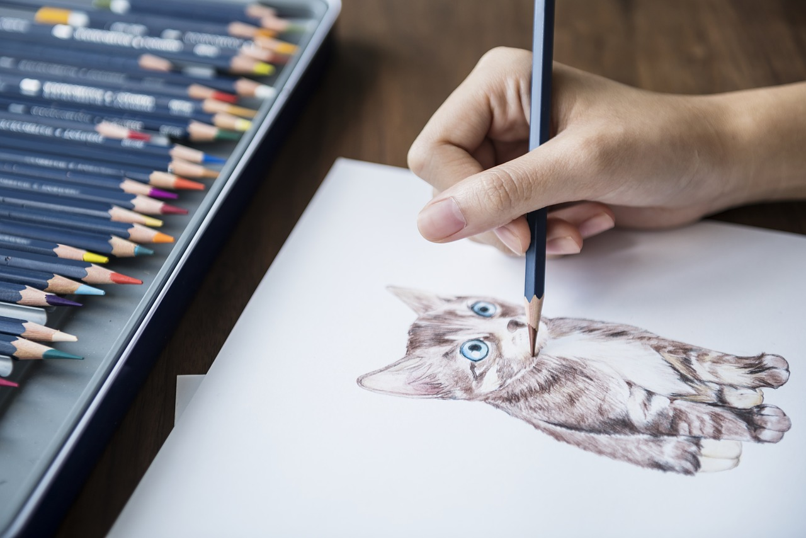

Pasatiempos |
Pagina Principal |
Contacto |
Favoritos |
Dibujar |
Desde pequeño e tenido una pacion por los dibujos y la pintura esto me ha llevado a interesarme cada vez mas por esto y se a combertido en un pasatiempo para desestresarme y distraerme. Poco a poco he podido aprender diferentes tecnicas para pintar y colorear y asi realizar dibujos muchoas mas bonitos. Las tecticas que mas suelo usar en mis dibijos son claro oscuro, sombras, pintura acrilica, pintura pastel. |
|  |